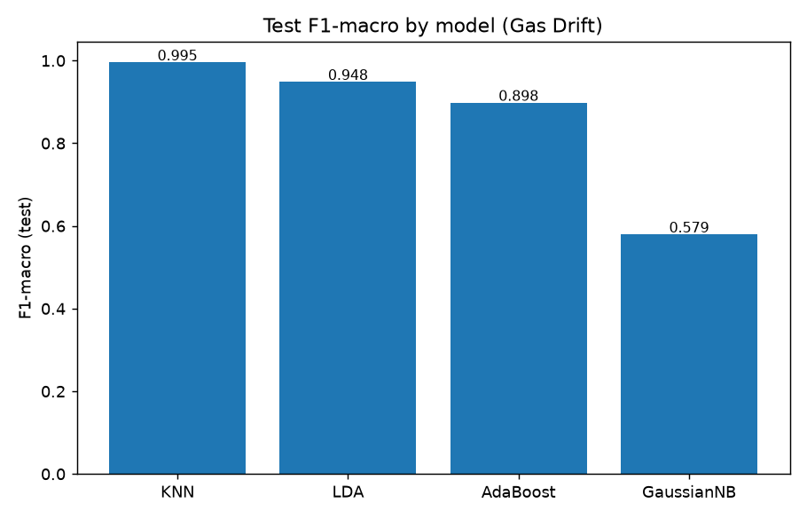
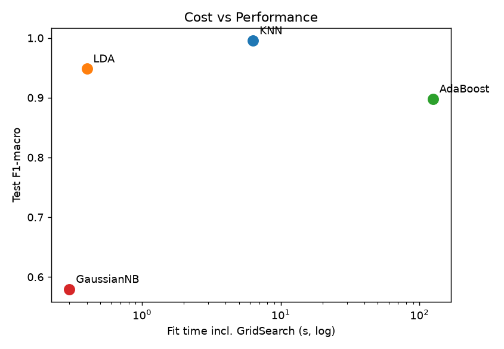
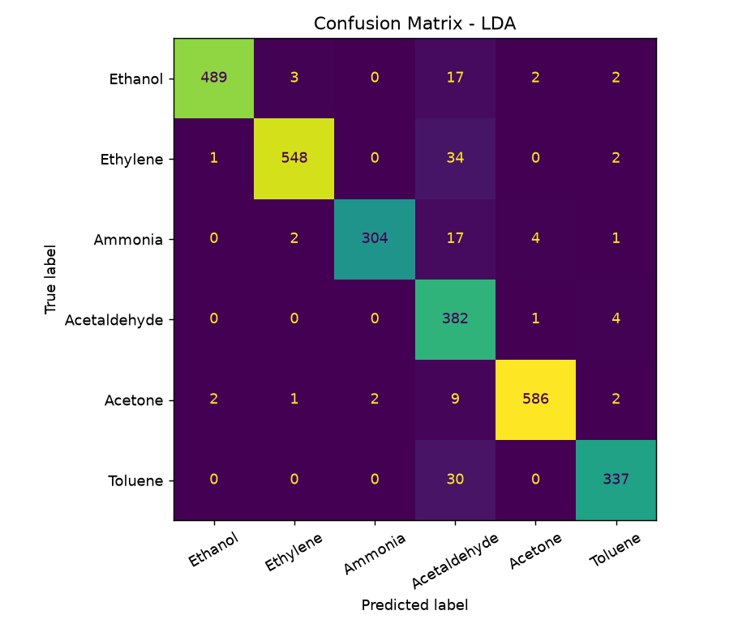
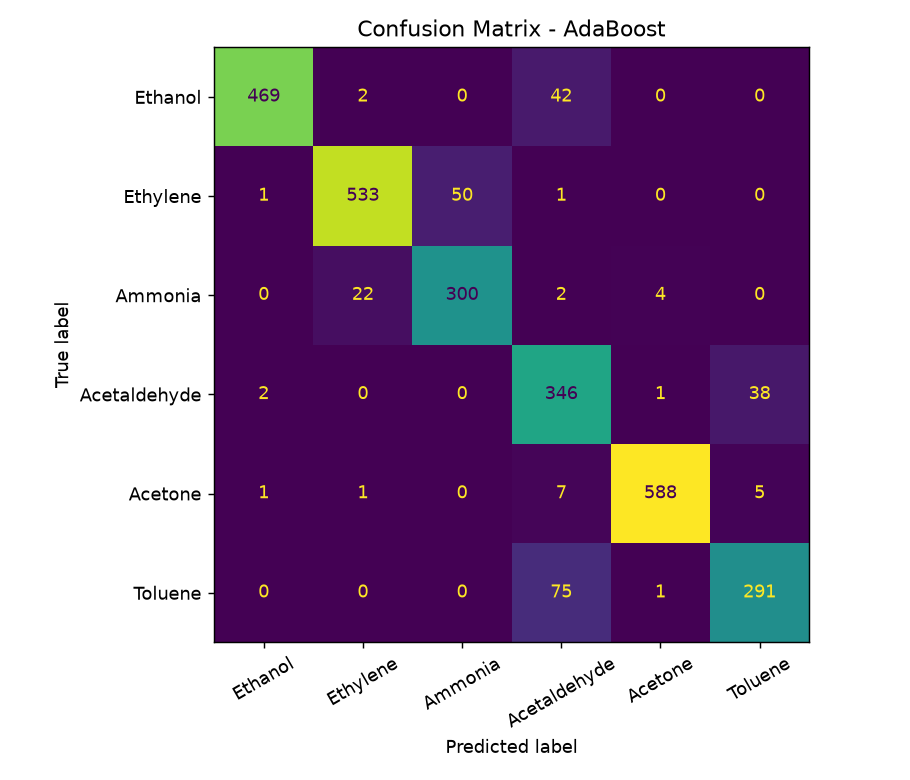
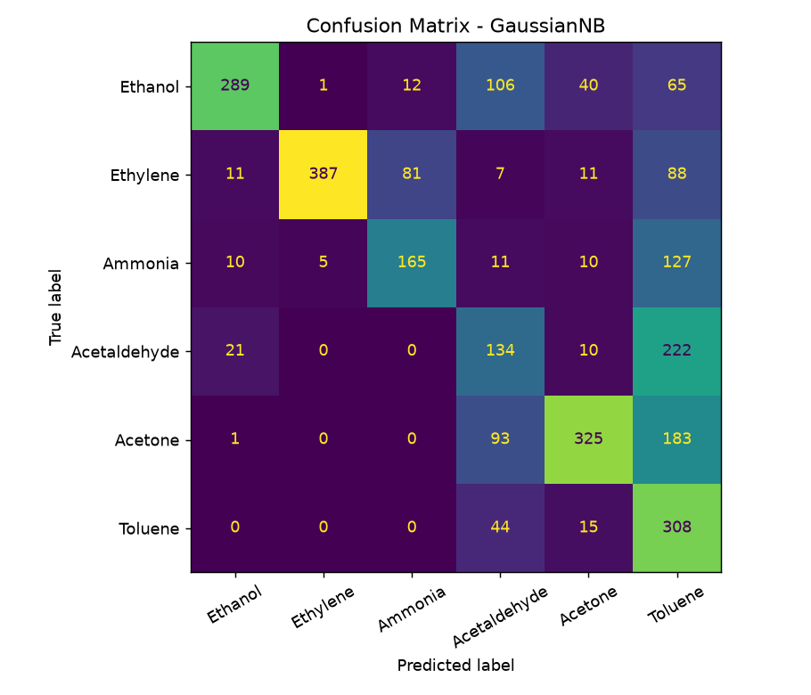
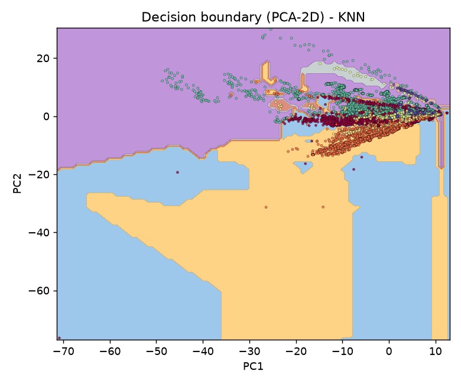
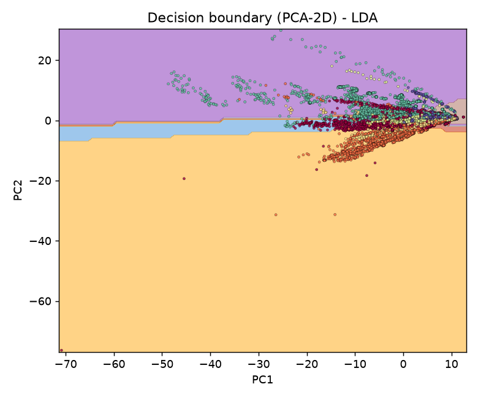
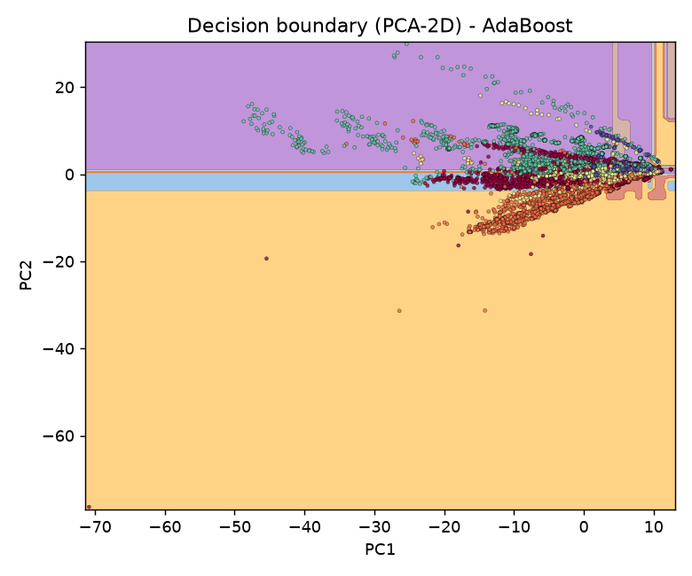
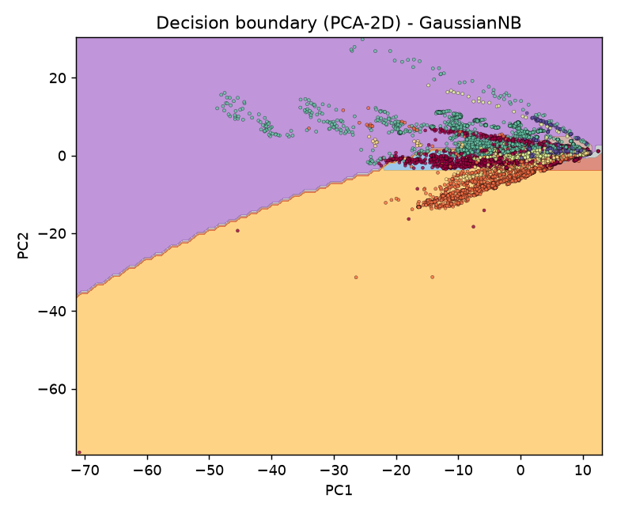

4 modelos fáciles de explicar compitiendo en igualdad: KNN (geométrica) · GaussianNB + LDA (probabilística) · AdaBoost (ensemble). Dataset real de sensores químicos ya descargado y parseado.
Usa las pestañas: Benchmark para costo vs rendimiento, Matrices para errores por gas, Fronteras para ver cómo separan en PCA-2D, Teoría para la tabla Phase 1 y Veredicto para las 3 preguntas finales. Clic en cualquier imagen para ampliar. Archivos reales en results/metrics_summary.csv y figures/.
KNN domina, LDA segundo, AdaBoost tercero pese a ser el más complejo.

KNN 0.995 · LDA 0.948 · AdaBoost 0.898 · NB 0.579LDA arriba-izquierda = óptimo. AdaBoost a la derecha = 300× más caro que LDA y peor.

Fit con GridSearch: NB 0.3s · LDA 0.4s · KNN 6.3s · AdaBoost 125.2s| Modelo | Best params | CV F1 | Test acc / F1 | Fit |
|---|---|---|---|---|
| KNN | manhattan, k=3, distance | 0.995 ±0.001 | 0.995 / 0.995 | 6.3 s |
| LDA | lsqr, sin shrinkage | 0.945 ±0.004 | 0.951 / 0.948 | 0.4 s |
| AdaBoost | 200 árboles d=2, lr=1.0 | 0.914 ±0.008 | 0.908 / 0.898 | 125.2 s |
| GaussianNB | var_smoothing=1e-9 | 0.568 ±0.008 | 0.578 / 0.579 | 0.3 s |
KNN casi diagonal perfecta. LDA falla un poco en Acetaldehyde→Acetone. AdaBoost dispersa errores en clases 3-4-6. NB colapsa en Acetaldehyde (0.34 F1) y Toluene.

LDA — limpio, leve confusión clase 4
AdaBoost — bueno en 1/2/5, flojo en 4/6
GaussianNB — fila 4 y 6 muy dispersasEl pipeline real usa 128-D. Para graficar se entrena un clon con los mejores hiperparámetros en 2 componentes PCA. En alta dimensión: KNN = islas locales flexibles (gana con n=13k denso) · LDA = rectas limpias (gaussianas separables) · NB = elipses ingenuas solapadas (falla) · AdaBoost = franjas escalonadas que sobre-fragmentan.

KNN — islas locales
LDA — rectas
AdaBoost — escalones
GaussianNB — elipses solapadas| Dimensión | KNN (F1) | GaussianNB (F2) | LDA (F2) | AdaBoost (F3) |
|---|---|---|---|---|
| Principio | Voto de k vecinos por distancia. Sin entrenar. | Teorema de Bayes + gaussiana + independencia ingenua. | Proyección que separa medias gaussianas con misma covarianza. | Suma ponderada de stumps que corrigen errores previos. |
| Outliers | Muy sensible (un vecino raro vota). | Media (sesga μ,σ). | Sensible (μ, Σ). | Muy sensible (persigue ruido/drift). |
| Coste | Train O(1), predict O(n·d). | O(n·d) / O(d). Rapidísimo. | O(n·d²). Rápido. | O(T·n·d). El más caro (125 s). |
| Suposición | Ninguna (no paramétrico). | Features independientes + gaussianas ✗ (sensores correlacionados). | Gaussiana por clase, misma Σ → lineal ✓ aprox. | Señal débil > azar; ninguna distribución. |
| Explicación 1-línea | "Dime con quién andas". | "Probabilidad ingenua por campana". | "La recta que mejor separa campanas". | "Muchos expertos torpes votando". |
data/gas_drift.csv parseado de batch*.dat (formato clase;conc 1:v…). Sin OneHot: todo numérico.
train_test_split 80/20 stratify seed=42 + StratifiedKFold 5 compartido.
Pipeline(StandardScaler → clf), scaler fiteado solo en train por fold. Sin leakage.
GridSearchCV scoring=f1_macro (desbalance). Grids pequeños y justos.
Accuracy, F1-macro/weighted, balanced-acc + tiempos fit/predict. Repro: python src/experiment.py
1. ¿Mejor equilibrio precisión-generalización? KNN (F1 0.995, CV≈test). Generaliza porque n=13k es denso en 128-D y la métrica manhattan + k=3 captura clusters de gases. Mención: LDA 0.948 con 15× menos tiempo.
2. ¿El complejo justifica su costo? No. AdaBoost 125 s vs LDA 0.4 s / KNN 6.3 s y rinde peor (0.898). Persigue outliers del drift del sensor. Mejor costo/rendimiento: LDA. NB el más barato pero inútil (0.579).
3. ¿Fronteras vs dimensionalidad? Ver pestaña Fronteras: KNN-islas (flexible, gana), LDA-rectas (generaliza en alta-D), NB-elipses solapadas (independencia rota), Boosting-escalones (sobre-fragmenta). En 128-D los lineales simples superan a los ingenuos; lo local denso (KNN) gana si hay datos suficientes.
Fuentes: Vergara et al. 2012 (Gas Sensor Array Drift) · Rodriguez-Lujan et al. (calibración) · UCI ML Repository id=270. Reproducir: pip install ucimlrepo pandas scikit-learn matplotlib → python src/download_data.py → python src/experiment.py. Figuras en figures/, métricas en results/metrics_summary.csv.